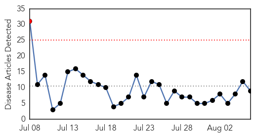
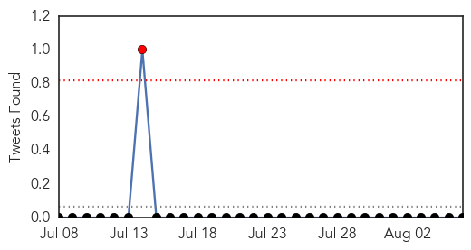

30 Day Trends
Web: 1 alerts, 0 warnings
Twitter: 1 alerts, 0 warnings
Top Articles:
- 0.995
- Scientists in Race to Gauge Pandemic Risk of New Bird Flu
- 0.993
- Authorities on alert after bird flu outbreak
- 0.992
- Vets: Keep calm and keep dogs from socializing
- 0.807
- East Coast US Warned to Prepare for Avian Flu
- 0.751
- August 5, 2015 Archives
- 0.751
- August 5, 2015 Archives
- 0.736
- Viruses Thrive in Bigger Households
- 0.615
- Flu Jab Avoiders Irresponsible
- 0.551
- East Jefferson General Hospital Employs Germ-Fighting Robot
Top Tweets:
-
No tweets found for Aug 06, 2015
Web/News Articles
Tweets
Article Locations